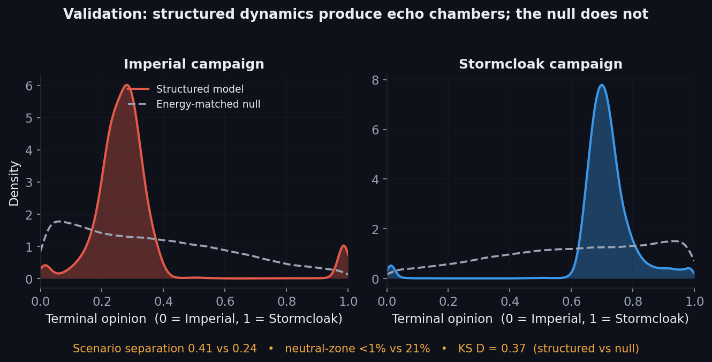

click to enlargeAgent-Based Modeling
Generative Opinion Dynamics in Skyrim
Emergent political belief & generative NPC dialogue
A stochastic agent-based model that evolves the political opinions of 1,010 named Skyrim NPCs through the Civil War: bounded-confidence influence, out-group repulsion, zealot anchoring, and a hold-clustered social network. To prove the social machinery (not the events) drives the outcome, it is tested against an energy-matched null with identical shocks: the structured model produces sharp echo chambers the null cannot. The emergent opinion of each character then conditions a local language model that voices them.
Beats an energy-matched null: separation 0.41 vs 0.24 · neutral-zone <1% vs 21% · KS D = 0.37 · 1,010 NPCs
Note: I re-ran the model with the social rules replaced by random motion of the same size. The realism disappeared: NPCs no longer took clear sides and the two campaigns barely diverged. So the believable structure is produced by the model, not by chance or the battles.